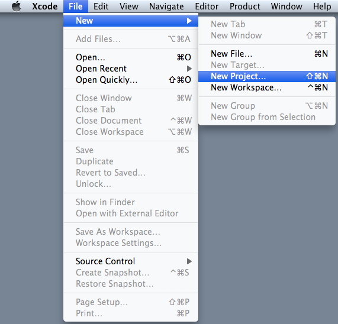
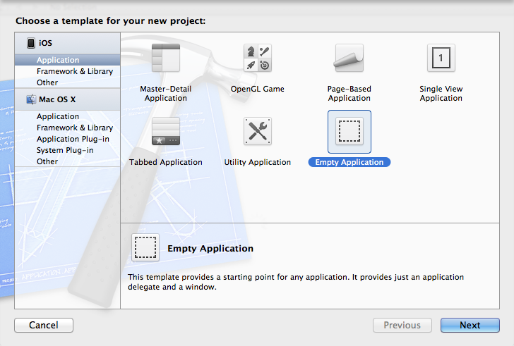
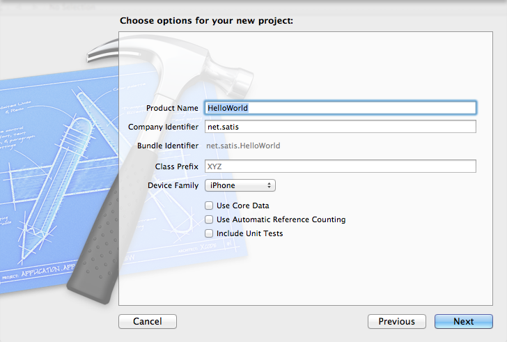
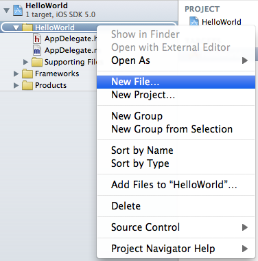
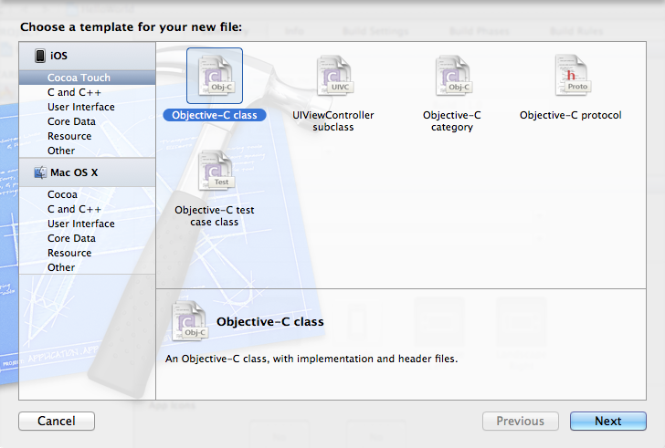
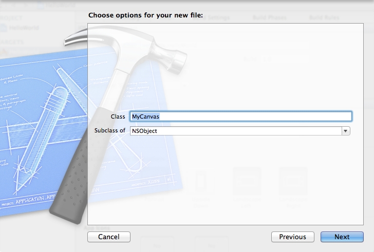
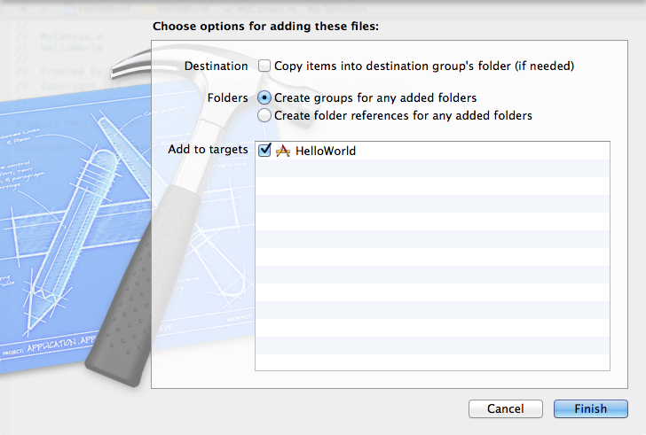
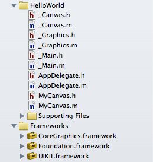

|
プロジェクトの作成 |
「HelloWorld」アプリケーションを実際に作成しながら、プロジェクトの作成の流れを説明していきます。
| （1）プロジェクトを新規作成する |
「Xcode」を起動します。

「File」-「New」-「New Project...」を実行します。

左側の「iOS」の「Application」を選択し、「Empty Application」を選んで「Next」ボタンを押します。

「Product Name」に「HelloWorld」と入力
「Company Identifier」に「net.satis」と入力
「Device Family」を「iPhone」に
「Use Core Data」のチェックを外す
「Use Automatic Reference Counting」のチェックを外す
「Include Unit Tests」のチェックを外す
「Next」ボタンを押します。
保存先を聞いてきますので、フォルダを選択して「Create」ボタンを押します。
| （2）MyCanvasクラスをプロジェクトに追加する |

「HelloWorld」グループをマウス右クリックして、「New File...」を実行します。

左側の「iOS」の「Cocoa Touch」を選択し、「Objective-C class」を選んで「Next」ボタンを押します。

「Class」に「MyCanvas」と入力
「Subclass of」を、とりあえず「NSObject」に
「Next」ボタンを押します。
| （3）D2iPのファイルをプロジェクトに追加する |
「HelloWorld」グループに、「Finder」から以下のファイルをドラッグ＆ドロップします。
_Canvas.h
_Canvas.m
_Graphics.h
_Graphics.m
_Main.h
_Main.m

追加方法を聞いてきますので、「Copy items into destination group's folder (if needed)」のチェックを外し、「Create groups for any added folders」を選択して「Finish」ボタンを押します。

| （4）各種ファイルの内容を記述する |
各種ファイルの内容を、デフォルトの内容を一旦消去してから以下のように記述します。
AppDelegate.h：
| #import "_Main.h" @class MyCanvas; @interface AppDelegate : _Main { MyCanvas* canvas; } @end |
AppDelegate.m：
| #import "AppDelegate.h" #import "MyCanvas.h" @implementation AppDelegate - (int)_orientation { return ORIENTATION_LANDSCAPE; } - (void)_start { canvas = [[MyCanvas alloc] init]; [self setCurrent:canvas]; } - (void)_destroy { [canvas release]; } @end |
MyCanvas.h：
| #import <Foundation/Foundation.h> #import "_Canvas.h" @interface MyCanvas : _Canvas { NSString* str; int w, h; int x, y; int dx, dy; int elapse; } @end |
MyCanvas.m：
| #import "MyCanvas.h" @implementation MyCanvas - (int)_frameTime { return 33/*1000 / 30*/; } - (void)_init { _Graphics* g = [self getGraphics]; [g setFontSize:20]; str = [[NSString stringWithString:@"Hello World !!"] retain]; w = [g stringWidth:str]; h = [g fontHeight]; x = 0; y = h; dx = 5; dy = 5; elapse = 0; } - (void)_end { [str release]; } - (void)_paint:(_Graphics*)g { elapse++; x += dx; if( (x <= 0) || (x >= [self getWidth] - w) ) { dx = -dx; } y += dy; if( (y <= h) || (y >= [self getHeight]) ) { dy = -dy; } [g lock]; [g setColor:[_Graphics getColorOfRGB:255 :255 :255]]; [g fillRect:0 :0 :[self getWidth] :[self getHeight]]; [g setColor:[_Graphics getColorOfRGB:0 :0 :255]]; [g drawString:[NSString stringWithFormat:@"%d", elapse] :0 :24]; [g drawString:str :x :y]; [g unlock]; } @end |